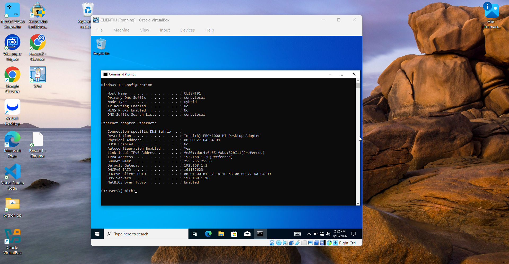
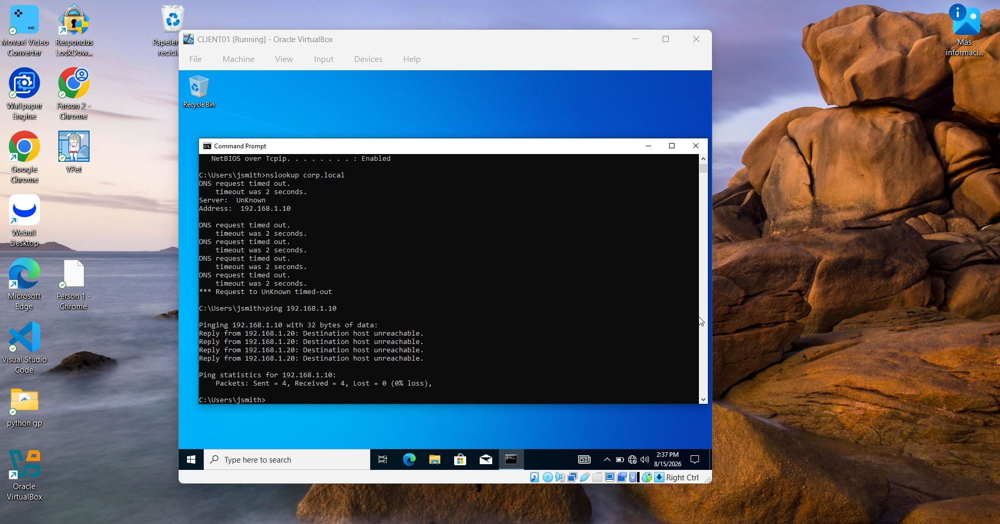
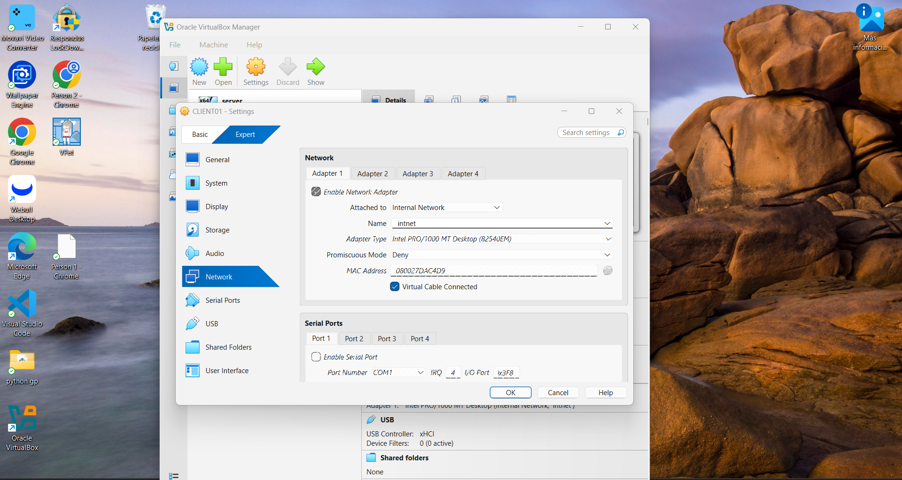
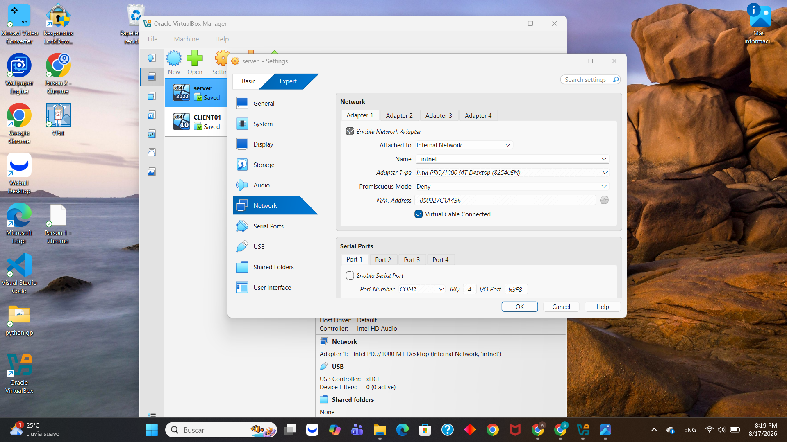
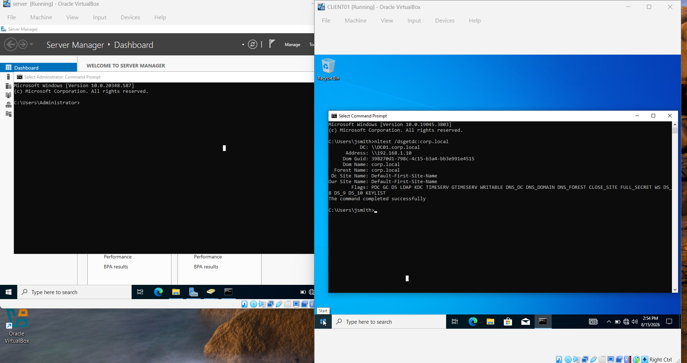

That Time My Client Couldn't Find the Domain Controller (and Why It Wasn't DNS)
I was jumping between my two lab VMs when nslookup started timing out. My first instinct was "DNS is broken." Spoiler: it wasn't DNS. Here's how I worked through it.
I ran nslookup corp.local on CLIENT01 and got this:
DNS request timed out.
timeout was 2 seconds.
Server: UnKnown
Address: 192.168.1.10
DNS request timed out.
*** Request to UnKnown timed-out
My first instinct was to go straight into DNS settings and start poking around. But I've learned that "DNS is broken" is one of those assumptions worth double-checking before you start changing things. So I just started working through it step by step.
// Step 1: Is the client configured correctly?
Before blaming DNS itself, I wanted to rule out the simplest explanation — maybe the client just had the wrong DNS server configured. I ran ipconfig /all to check.

DNS server was set to 192.168.1.10 — that's my DC's IP, exactly right. Primary DNS Suffix showed corp.local. The client wasn't misconfigured. Which meant the problem was somewhere between the client and the server, not in the settings.
// Step 2: Can the client even reach the server?
This is the step people skip too often. A DNS timeout doesn't automatically mean the DNS service is broken — it just means the client didn't get an answer. That could be a dead service, or it could mean the client can't reach the server at all. So before touching anything, I pinged it.

// Step 3: Is it a VirtualBox networking issue?
My next guess: maybe the two VMs weren't on the same virtual network. This happens in VirtualBox — if one adapter is NAT and the other is Internal Network, they can have IPs in the same range and still have no way of talking to each other. So I checked both adapters.


Both on the same internal network with the same name. So that wasn't it either. A little frustrating, but at least I was eliminating possibilities.
// Step 4: Wait — is the server even on?
At this point I'd confirmed: client config was good, network attachment matched. The only thing left was the simplest possible answer. I looked at VirtualBox Manager and noticed:
CLIENT01 → Running
My domain controller was suspended. Not crashed, not misconfigured — just not on. I'd never started it for this session. Everything I'd checked was correct, and none of it mattered because there was nobody home on the other end.
// The fix
Started the server, gave it a minute to fully boot, then ran nltest /dsgetdc:corp.local on the client to confirm everything was talking again.

DC: \\DC01.corp.local
Address: \\192.168.1.10
Dom Name: corp.local
Forest Name: corp.local
Flags: PDC GC DS LDAP KDC TIMESERV ...
The command completed successfully
// What I took away from this
- Don't trust your first read of an error. "DNS timed out" made me want to jump into DNS config, but the real issue was three layers removed from DNS entirely.
- Ping is underrated. That one "Destination host unreachable, from myself" line told me more than the actual DNS error did.
- Rule out the boring stuff early. Check if the machine is on before assuming the config is broken. It's a five-second check that can save twenty minutes.
- Ruling things out is still progress. My VirtualBox network check didn't find the problem, but it meant I could stop looking there and move on with confidence.